| 日付 | 2015年10月24日（土） |
|---|---|
| 山域 | 大菩薩 |
| メンバー | 家族（妻、長女・4歳、長男・2歳） |
| 山行形態 | 子連れ日帰り |
| アクセス | 車 |
| ルート (Map) | 柳沢峠 (9:21) - (10:28) 六本木峠 - (11:00) 横手山峠 - (11:56) 立岩沢 - (12:45) 黒川鶏冠山 (13:31) - (13:41) 見晴台 - (14:09) 横手山峠 - (14:54) 六本木峠 (15:09) - (15:54) 柳沢峠 |
黒川鶏冠山は大菩薩嶺の北にある地味な山だ。
標高は1716mとそこそこ高い。そろそろ寒くなってきたので
今年最後の高山となりそうだ。
柳沢峠に到着。標高1470m。
ここは甲州街道の裏街道として使われた青梅街道が山を越えるポイントである。
青梅街道はかつて大菩薩峠を超えていたが、明治時代にこの柳沢峠を越えるように
ルートが変更された。
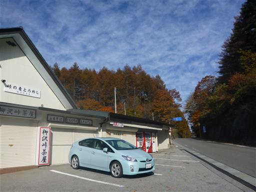
駐車場のすぐ側に登山口がある。
駐車場で腕時計を失くしてしまった…
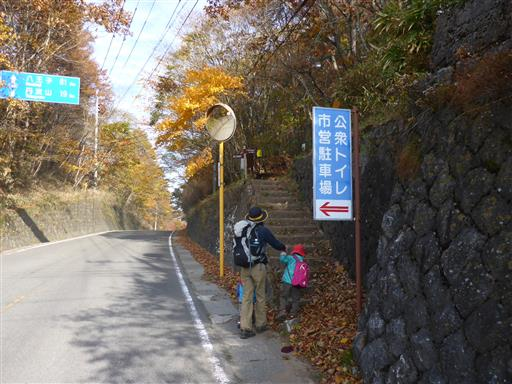
大きい葉がたくさん落ちている。娘は早速葉を拾って遊んでいる。
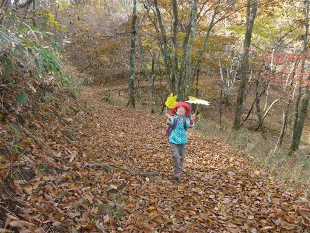
気に入った葉をザックに挿して歩き始める。
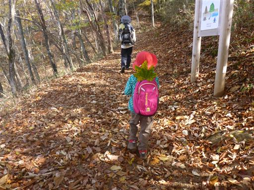
ちょうどこの場所は紅葉真っ盛りだ。
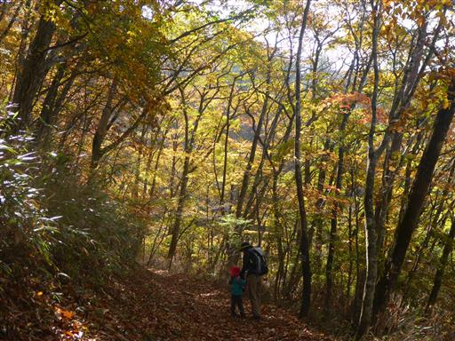
落ちたばかりの赤い葉が、地面に敷き詰められている。
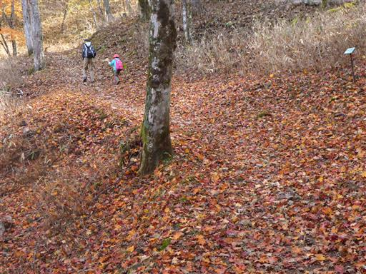
トラバース気味につけられた登山道で、所々で沢を渡る。
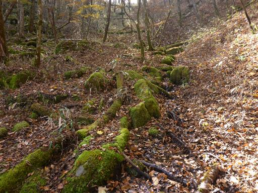
沢の周辺は苔が生長している。かなり大きな苔で、触るとふわふわだ。
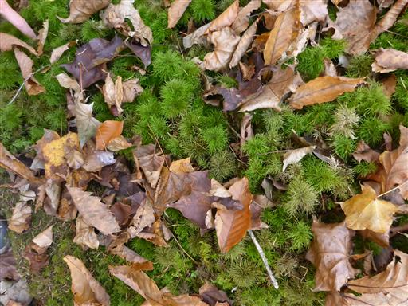
六本木峠に到着。大菩薩嶺方面に続く登山道と分かれる。
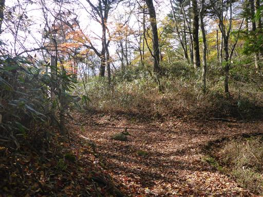
ここからは少しだけ植林地帯がある。
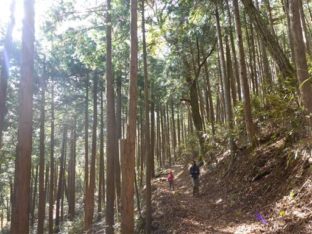
小さな木橋を慎重に渡る。
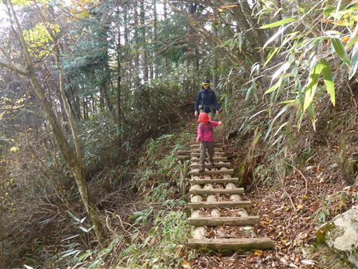
林道を横切る。通る車の無さそうな静かな林道だ。

ここから少し道が広くなる。
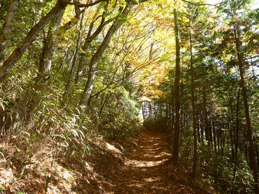
分岐点に到着。尾根にはなぜか登山道が無く、
尾根の南側と北側に登山道が付けられている。
南側の登山道から山頂を目指すことにする。
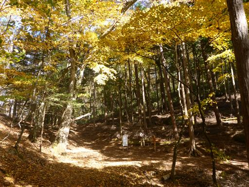
途中の切り開きからは、大菩薩嶺が間近に見える。
こちらの方向から大菩薩嶺を眺めるのは初めてで、新鮮な景観だ。
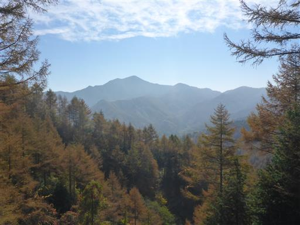
足元にきれいな虫を見つける。寒いからかあまり動かない。
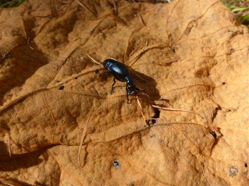
しっかりした登山道だが、人が歩いた形跡が若干少ない気がする。
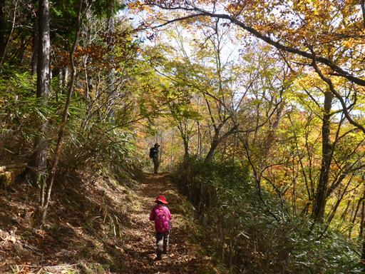
この辺りは特に紅葉が美しい。
分岐点からずいぶん歩いたのに、なかなか山頂に着かない。道が若干下っているのも気になる。
しかし、コンパスで確認すると方向はおおよそ合っている。途中で人ともすれ違った。
疑心暗鬼を抱きながら進み続ける。
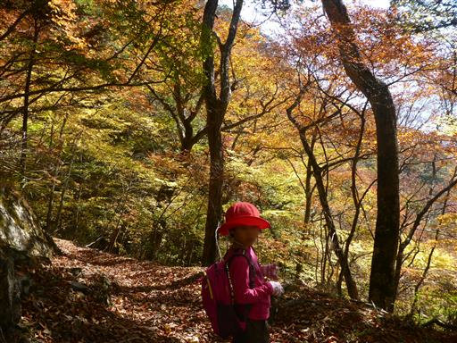
大きな倒木が道を塞いでいる。
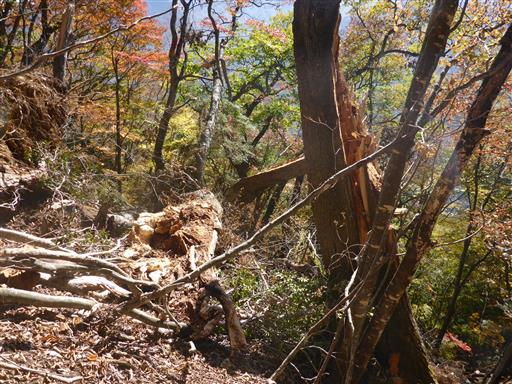
急峻な坂につけられた薄い踏み跡を辿って迂回する。
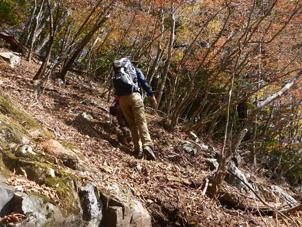
ようやく標識を見つける。
しかし、山頂まで1.2kmもあり、しかも急な上り坂と記載されている。
恐らく道を間違えたのだろうが、今は標識通り山頂を目指すしかない。
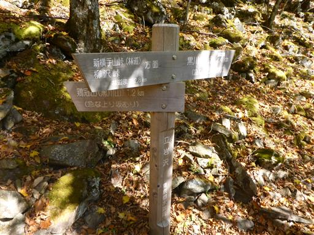
美しい紅葉を眺めて、一呼吸おいて出発する。
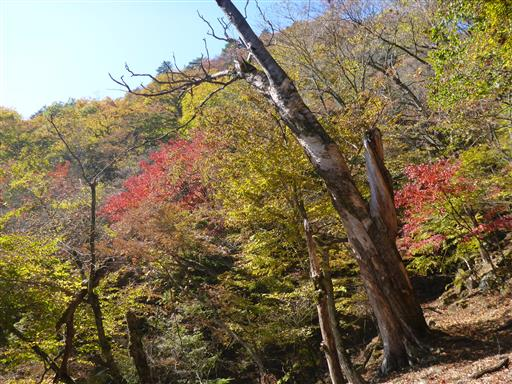
斜面に大木が立っている。時刻は12時を過ぎてしまい、娘は文句を言っている。
寝ていた息子も起きてしまい「歩く歩く」と煩いため、下ろして少し歩かせてあげる。
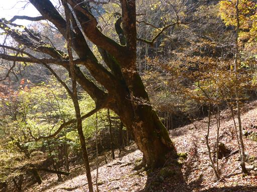
急な坂を登りきって、山頂直下の分岐点に到着にする。
分岐点の数は地図よりも一つ多く、歩いてきた道は地図に載っていない方向を指している。
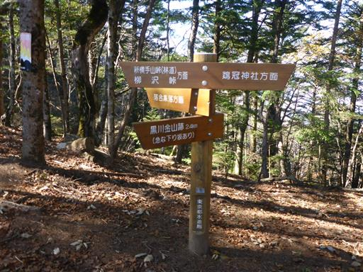
ここから黒川鶏冠山までは急な坂を一登りだ。
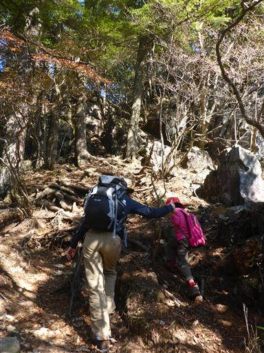
山頂直下の岩場を越える。
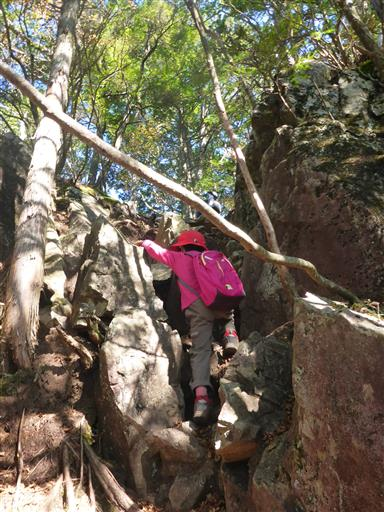
鶏冠山に到着。標高1716m。「けいかんざん」と読む。
同名の山が近くにあるが、そちらは「とさかやま」と読む。
紛らわしいため、こちらの山は黒川鶏冠山と呼ばれている。
山頂には鶏冠神社奥宮が祀られている。
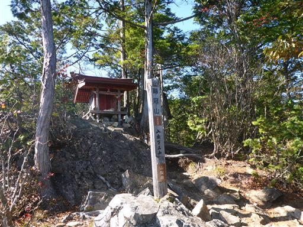
山頂は狭く、すぐ先は目が眩むような急峻な崖だ。

南側の展望が広がる。目の前の大菩薩嶺が良く目立つ。
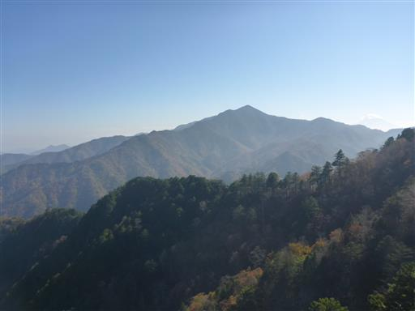
富士山は山頂部が笠をかぶっている
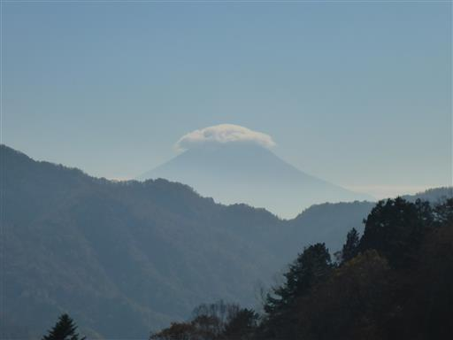
奥多摩方面。左奥に見えているのは、この間登った三頭山だ。
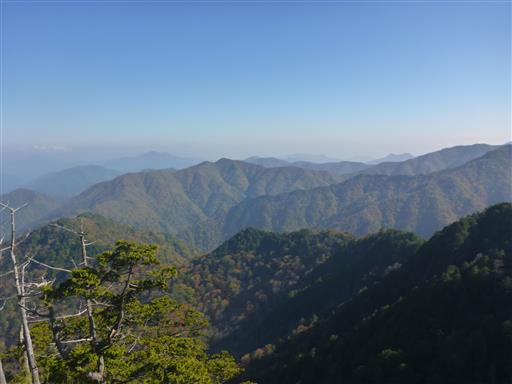
昼食をとったら、時間が押しているのですぐに出発する。
帰りは北側の道ではなく、登りに歩く予定だった南側の道を選択。
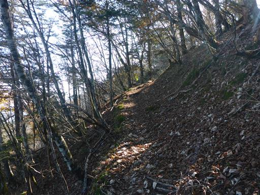
見晴台の標識があったので、一人走って往復する。
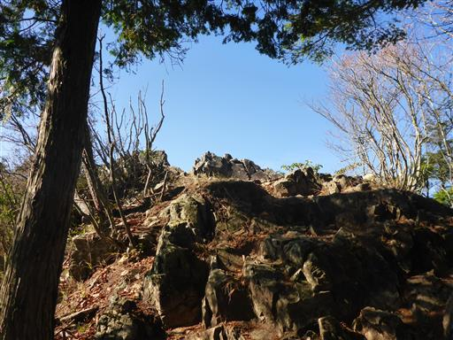
ここからは素晴らしい展望が広がる。
奥秩父の主稜線の山々が一直線に並んでいる。
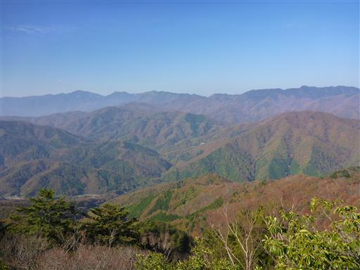
こちらの登山道も登りに使った道と同様、トラバース道だ。
同じような道で分かりにくい。

所々、木に巣箱のようなものが付けられているが、これは何だろう？
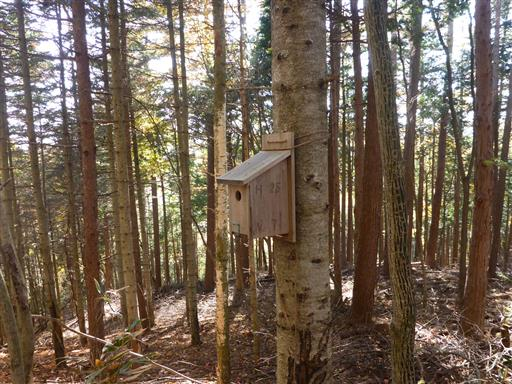
下りは息子も頑張って歩いている。歩きやすい登山道だ。
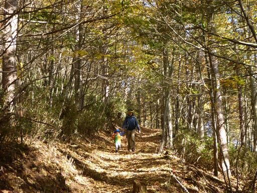
横手山峠に到着。ここが北側コースと南側コースの分岐点だ。
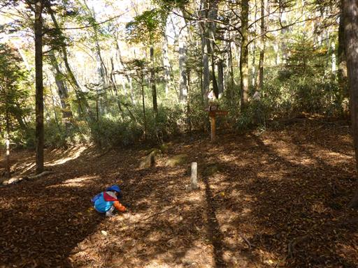
そのすぐ先に、登りで間違えた分岐点がある。
標識を良く見ると、歩いて行った先は「黒川金山跡」と書かれている。
これを黒川鶏冠山と読み間違えてしまったのだ…
分岐点は1つしかないと思い込んでいた上での早とちりだった。
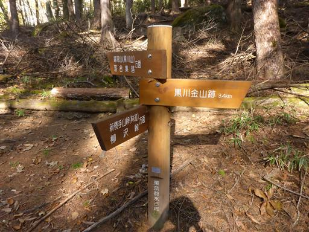
落ち葉に卵のようなものがくっついている。
落ち葉に産み付けられたのか、産み付けられた葉が落ちたのか、どちらだろう？
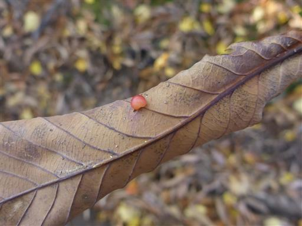
六本木峠近くで休憩する。
息子は先ほどキャリアに乗せた時におやつを欲しがっていたが、
休憩ポイントに到着する前に眠ってしまった。
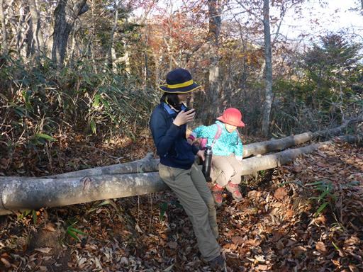
3時を過ぎて日が暮れてきた。
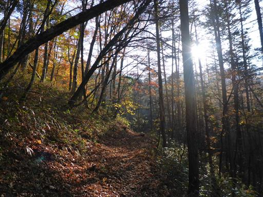
立派なブナの黄葉が美しい。
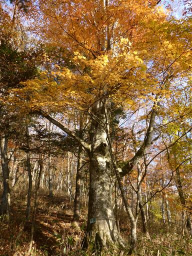
人気がない寂しい道を歩いて行く。
柳沢峠の駐車場は賑わっていたのに、見かけた登山者の数は少なかった。
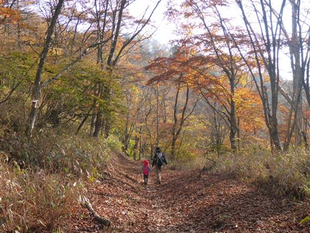
ようやく下山する。柳沢峠からも富士山が見えている。
今回は道を間違えてしまい、時間がかかる登山になってしまった。
本屋で最新版の「山と高原地図」を見ると、間違えた登山道が記載されていた。
持っている地図は2006年に購入したもので、そろそろ最新版の地図に買い替えるべきかもしれない。
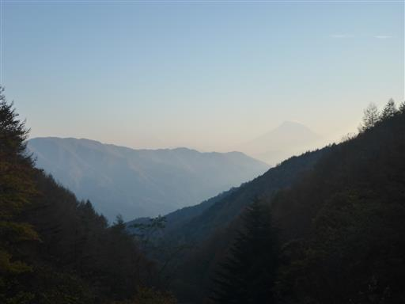